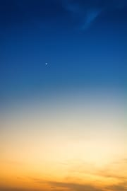

Change the Weather.org
Fish Haven
5 Day Forecast
Look at the Stars
Looking at a starry sky can be one of the most relaxing and comforting experiences out there. However, they cannot be enjoyed anywhere or all year round.
If you want to enjoy a starry sky, the most important thing is that you look for a place where there is no light pollution.
The Perseids are visible in summer, roughly between July 17 and August 24. Depending on the year, the days may vary, but it is always during those months. The Perseids, popularly known as the Tears of Saint Lawrence, are considered the best meteor shower of the year.
If you are not lucky enough to be able to enjoy a meteor shower, you have the option of looking for a place where you can see the Milky Way. The United States, being located in the northern hemisphere, the best months to see and enjoy it are between May and August. On the other hand, if you are in a country that belongs to the southern hemisphere since April you will be able to enjoy it.
Upcoming Events